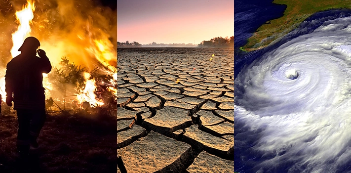

The signs of global warming are everywhere, and are more complex than just climbing temperatures.

Our climate is determined by patterns of temperature, wind, atmospheric pressure, humidity and rain over a long period of time.
There are different climates around the world, such as tropical, dry and moderate. As a large country, Australia has a variety of climates.
The climate of an area determines its seasons and when they come and go. This, in turn, affects the type of plants that grow and which animals
survive. The species and places we love depend on intricate ecosystems, and even small changes to the climate can disrupt the delicate balance
of nature.
As humans, every aspect of our life is reliant on the natural environment. This includes the food we eat, the air we breathe, the water we drink, the clothes we wear and the products that are made and old to create jobs and drive the economy.
A healthy and stable climate is our most precious natural resource.
• Hotter days:
2015 was the hottest year on record, the previous record was broken in 2014, and 2016 is expected to set a new record for the third year in a row. In the past few years records have being broken for longest heatwaves and the Bureau of Meteorology has added purple and magenta to the forecast map for temperatures up to 54°C.
• Rising sea levels:
Increased ocean temperatures are melting glaciers and ice caps all over the world. Melted ice increases the volume of water in our oceans. Warmer temperatures also result in the expansion of the water's mass, which causes sea levels to rise, threatening low-lying islands and coastal cities.
• More frequent and intense extreme weather events:
Extreme weather events like bushfires, cyclones, droughts and floods are becoming more frequent and more intense as a result of global warming.
• Oceans are warming and acidifying:
The oceans have absorbed most of extra heat and carbon dioxide (CO2) so far – more than the air – making the seas both warmer and more acidic. Warming waters are bleaching coral reefs and driving stronger storms. Rising ocean acidity threatens shellfish, including the tiny crustaceans without which marine food chains would collapse.
A Real life example of how is global warming affecting life in Australia?
• Ecosystems:
Global warming stresses ecosystems through temperature rises, water shortages, increased fire threats, drought, weed and pest invasions, intense storm damage and salt invasion, just to name a few. Some of Australia’s great natural icons, such as the Great Barrier Reef, are already threatened.
• Species:
One in six species is at risk of extinction because of climate change. To survive, plants, animals and birds confronted with climate change have two options: move or adapt. With the speed of climate change we are experiencing already, it’s often not possible for a species to adapt quickly enough to keep up with its changing environment. And with the amount of habitat destruction, moving is becoming increasingly difficult.
• Food and farming:
Changes to rainfall patterns, increasingly severe drought, more frequent heat waves, flooding and extreme weather make it more difficult for farmers to graze livestock and grow produce, reducing food availability and making it more expensive to buy.
• Water:
Reduced rainfall and increasingly severe droughts may lead to water shortages.
• Coastal Erosion:
Rising sea levels and more frequent and intense storm surges will see more erosion of Australia's coastline, wearing away and inundating community and residential properties.
• Health:
Increasingly severe and frequent heat waves may lead to death and illness, especially among the elderly. Higher temperatures and humidity could also produce more mosquito-borne disease.
• Damage to homes:
Increasingly severe extreme weather events like bushfires, storms, floods, cyclones and coastal erosion, will see increased damage to
homes, as well as more costly insurance premiums.
• Coral bleaching:
Rising temperatures and acidity within our oceans is contributing to extreme coral bleaching events, like the 2016 event that destroyed more than one-third of the Great Barrier Reef.